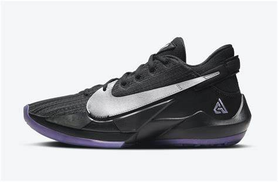
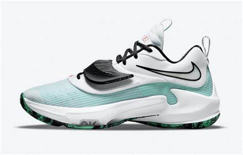
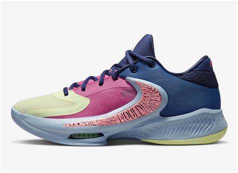
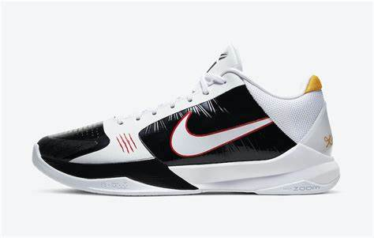

Nike Zoom Air Freak 1 One of One Take over the game with Giannis Antetokounmpo's debut signature shoe – the Nike Air Zoom Freak 1. It complements his unstoppable athleticism with lockdown forefoot support, enhanced traction and impact-protecting Zoom Air cushioning. The perfect blend for Giannis’ relentless, up-tempo style of play.
Zoom Freak 2 The Zoom Freak 2 was made for Giannis, but designed for every type of player. It takes the design of its predecessor to the next level by moving the Zoom Air from the heel to the forefoot and adding more cushioning for better responsiveness.
Zoom Freak 3 Giannis is an athlete of freakish power and incredible range.His ability to play any position make him difficult to guard and nearly impossible to stop.The Zoom Freak 3 helps Giannis create space with his massive strides and misdirecting Euro-step.The moulded midfoot strap and external overlay provide side-to-side stability when he's powering to the rim, while the multi-directional traction helps him stay in control.
Zoom Freak 4 Giannis is an incessant storm of stamina and skill that keeps coming at opponents for 4 quarters or more. The forward-thinking design of his latest signature shoe helps propel you down the court in a lightweight fit that moves with you. It can handle quick changes in direction on both sides of the floor, giving you side-to-side stability and multidirectional traction as you Euro step to the hoop. This special design is inspired by Giannis' 1-and-only last name, 1 that befuddles both fans and analysts alike.
Kobe 5 Protro Bruce Lee artial artist Bruce Lee practised Jeet Kune Do, the Chinese philosophy of fighting without fighting, translated as: "The Way of the Intercepting Fist". Kobe took major inspiration from Lee's style and mentality, learning to adapt and react to the split-second spontaneity of the game. The Kobe 5 Protro 'Bruce Lee' remembers the masters with a release of the classic colourway from 2010. The black and yellow upper and red scratch marks nod to memorable elements from Lee's iconic career. Lower, sleeker and faster-looking than before, the Protro is fitted with a large, flexible Zoom Air unit, responsive foam and scaled-down traction for optimal court feel.